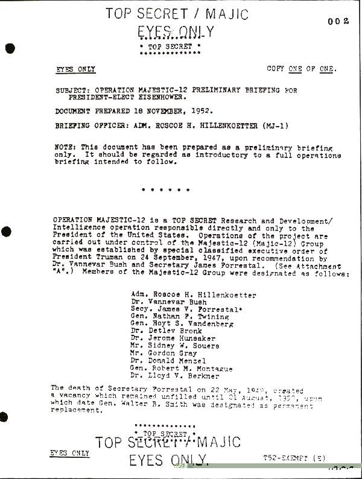

| Document | Traduction |
|---|---|
|  |
* TOP SECRET * ************** LE PRESIDENT-ELU EISENHOWER. DOCUMENT PREPARE LE 18 NOVEMBRE 1952. OFFICIER DE BRIEFING: AMIR. ROSCOE H.
HILLENKOETTER (MJ-1) L'OPERATION MAJESTIC-12 est une opération TOP SECRET de Recherche et D�veloppement/ Renseignement placée sous la seule et directe responsabilit� du Pr�sident des Etats-Unis. Les opérations du projet sont men�es sous le contrôle du Groupe Majestic-12 (Majic-12) qui fut cr�� sur l'ordre secret ex�cutif spécial du Pr�sident Truman, le 24 Septembre 1947, sur recommandation du Dr. Vannevar Bush et du Secr�taire James Forrestal. (Voir Annexe " A"). Les membres d�sign�s du Groupe Majestic-12 furent les suivants:
Dr. Vannevar Bush, Secr. James V. Forrestal, G�n. Nathan F. Twining, G�n. Hoyt S. Vandenberg, Dr. Detlev Bronk, Dr. Jerome Hunsaker, Mr. Sidney W. Souers, Mr. Gordon Gray, Dr. Donald Menzel, G�n. Robert M. Montague, Dr. Lloyd V. Berkner La mort du Secr�taire Forrestal le 22 Mai 1949 cr�a une place vacante jusqu'au 1er Ao�t 1950, date à laquelle le G�n. Walter B. Smith fut d�sign� comme rempla�ant permanent. ************** * TOP SECRET * ************** 0 0 2 /.. |